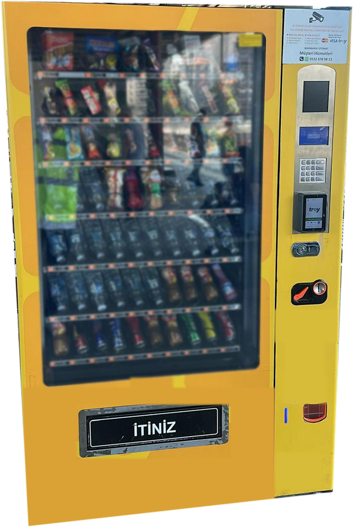

Ubicación de máquinas
Instalamos nuestras máquinas en andenes, entradas de estación y puntos de transbordo, donde te resulta fácil llegar.
Bebidas frías, snacks, tostadas, té y café en 43 estaciones de Halkalı a Gebze. Cada día, Marmaray Otomat te ofrece productos frescos con pago rápido y sencillo.




Snacks y bebidas frías
Marmaray Otomat ofrece un servicio rápido, de calidad y fiable con máquinas expendedoras modernas. Con 126 máquinas en las 43 estaciones del Marmaray, llevamos cada día productos frescos y variados a los pasajeros.
En nuestras máquinas encontrarás 24/7 bebidas frías, snacks, sándwiches frescos cada día, tostadas, té y café. Puedes pagar con tarjeta de crédito, tarjeta de débito, QR o İstanbulkart. Con nuestros estándares de higiene y calidad, la satisfacción del cliente es siempre lo primero.
Marmaray Otomat es un servicio de Aykar.
De los andenes a las entradas, te acompañamos en cada punto de tu viaje en el Marmaray.
Instalamos nuestras máquinas en andenes, entradas de estación y puntos de transbordo, donde te resulta fácil llegar.
Reponemos con regularidad bebidas frías, snacks, tostadas y bebidas calientes. Nuestros sándwiches llegan frescos cada día.
Tus peticiones y quejas nos importan. Escanea el código QR de la máquina para contactarnos en segundos; revisamos cada aviso uno por uno.
Comprobamos las fechas de caducidad y mantenemos nuestras máquinas limpias y ordenadas.
Usar nuestras máquinas lleva tres pasos. Elija su método de pago y siga los pasos.
Marca el número que aparece en el estante del producto. En la pantalla verás el producto y el precio.
Acerca tu tarjeta de crédito al lector (sin contacto) o insértala. Introduce tu PIN si se solicita.
Acerca tu tarjeta de débito al lector (sin contacto) o insértala. Introduce tu PIN si se solicita.
Escanea el código QR de la pantalla con la app de tu banco y confirma el pago.
Acerca tu İstanbulkart al lector y el importe se descontará de tu saldo.
Al aprobarse el pago, el producto cae en la bandeja inferior. Si hay algún problema, escanea el código QR de la máquina y escríbenos.
La animación es solo ilustrativa; la pantalla de la máquina puede verse diferente.
Tenemos 126 máquinas en las 43 estaciones de Halkalı a Gebze: bebidas frías, snacks, sándwiches frescos, tostadas calientes, té y café, con pago por tarjeta, QR o İstanbulkart.
Toca un punto de la línea para ver esa estación en el mapa.
No se encontró ninguna estación con ese nombre.
Toca una estación para verla en el mapa. Abrir en Google Maps
Tarjeta de crédito, tarjeta de débito, pago con QR e İstanbulkart. Consulta la guía de pago para ver los pasos.
Escanea el código QR de la máquina; la estación y la máquina se rellenan solas en el formulario. Envía tu queja, la revisaremos y te llamaremos.
No hace falta. Cada máquina tiene su propio código QR; al escanearlo se seleccionan automáticamente la estación y la máquina. Si no puedes escanearlo, elige la estación y la ubicación en el formulario.
Nuestros sándwiches llegan frescos cada día y las máquinas se reponen a diario.
Nuestras máquinas funcionan 24/7. El acceso a las estaciones depende del horario del Marmaray.
Usa el formulario de sugerencias. Tenemos en cuenta las sugerencias al organizar nuestros estantes.
Escríbenos si tuviste un problema con alguna máquina o quieres ver un producto.
Lo más rápido: escanea el código QR de la máquina. La estación y la máquina se eligen solas.


Küçükçekmece / İstanbul
[Açık adres]
Horario de oficina: [Laborables 00:00–00:00, sábado 00:00–00:00]